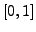

A set of phdist:colour lines defines an RGB path for colourising the Phase Distribution Diagram, p. .
.
parameters:
The scale parameter refers directly to probability density of phases in case of phdist:colmodel:lin, or to a fractile of probability density on the interval  in case of phdist:colmodel:rank.
Piet Reegen
2009-09-23